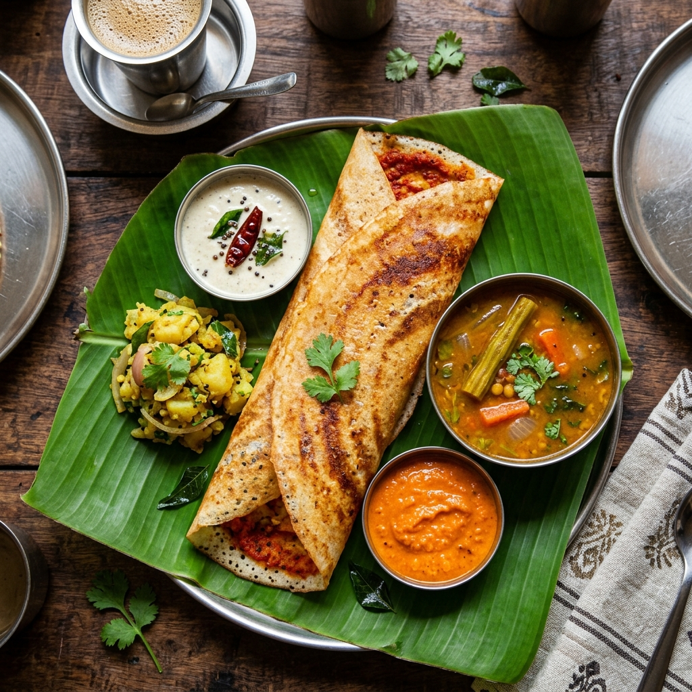

🟢
Breakfast / Brunch
Mysore Masala Dosa
The legendary crispy rice crepe with a generous smear of spicy Mysore chutney (made from dried red chilies, garlic, and roasted chana dal), stuffed with spiced potato masala. The distinctive redness of the chutney inside is what makes a Mysore Masala Dosa different from any other dosa in the world.
🍽️ Breakfast staple
💰 ₹60–120
🌶️ Medium spicy